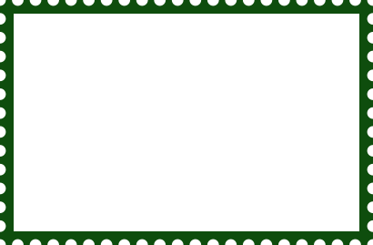
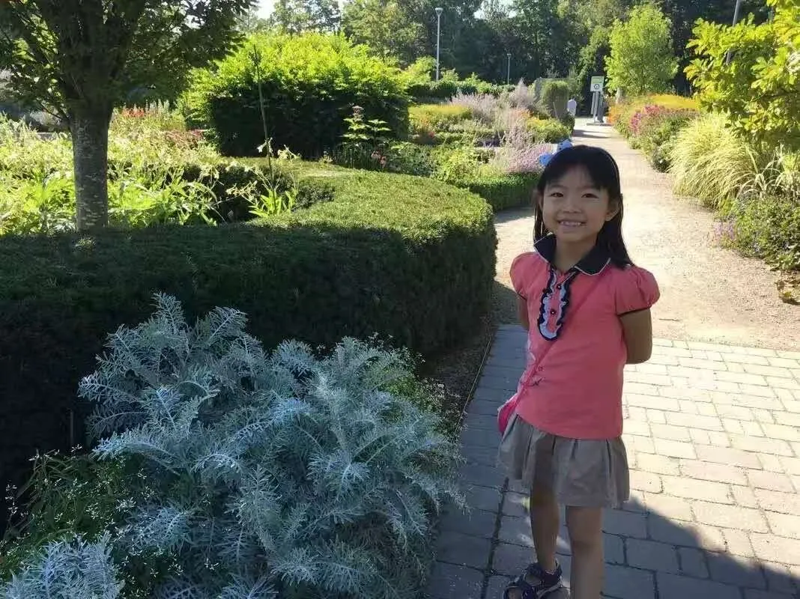
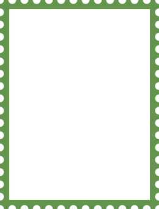

about me
hi i'm winnie :)
i'm a systems design student who’s excited to explore and build things. 2x hackathon winner! see my projects right now, i'm working on an electric skateboard with electrium mobility. i'm also interested in product and UX design, software dev, and would love to explore more of mechanical!
i'm fascinated by good design. i LIVE for the aesthetic, but good design goes beyond that. my trifecta is meaningful, inclusive, intuitive. i strive to create meaning in everything i do - build things that have a real impact on the people they’re supposed to help. the world is designed for the average person, and i want to include people on the edges too. intuitive design feels like a given until you’ve truly experienced it. for me, that was navigating the japanese subway without knowing a lick of japanese. go to japan, it'll change your life.
“fun” to me is sitting in my room with a good movie, a delicious snack (bonus points for cashews or chocolate covered pretzels), and a craft project. i probably have 10 wips (works in progress) right now, that range from knitting to visual art to sewing. but i'll probably still pick up a new craft next week because i watched a youtube video on it.




skills
- java4 years
- python5 years
- c++1 year
- figma1 year
- solidworks6 months
 github1 year
github1 year HTML5 years
HTML5 years css5 years
css5 years javascript1 year
javascript1 year react.js1 month
react.js1 month